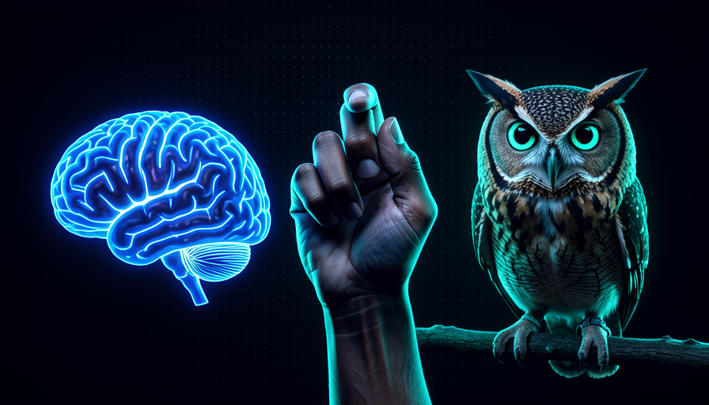
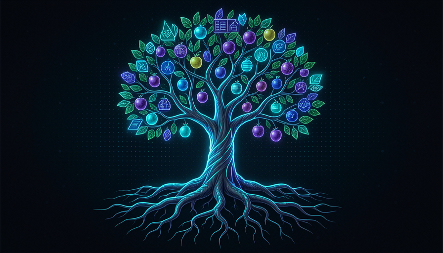

📖 Living glossary (read first — come back whenever you need to)
The new terms in this module, in plain language. The core terms (model, agent, skill, harness…) were defined in Track 1—we just use them here.
📘 Knowledge: understanding
🧠 Imagine it this way: you read an entire book about how to ride a bike — the physics of balance, gears, brakes. You knows everything. But that still isn't knowing how to ride. Knowledge is having the map in your head; it still isn't having pedaled.
Pocock breaks "knowing something" into three layers, and the first is the knowledge (in English, knowledge). It’s what he calls "the fundamental, understanding it in your head": you understand what something is, why it exists, and how it works—at least on paper. It’s the easiest layer to acquire: you read, watch, someone explains it, and that’s it, you’ve got it in your head.
Why does this separation matter for our course? Because knowledge is exactly the kind of thing AI distributes for free in seconds. Ask model "explain what dependency injection is" and you get a lesson. The common mistake for beginners is confusing this easy access to knowledge with real competence: reading about tests doesn't make you good at testing, just as reading about swimming doesn't teach you to swim. Knowledge is necessary, but it's only step 1 of 3—and on its own, it's the cheapest of the three.
Three steps we usually all call “knowing.” They go from least expensive to most expensive.
⚠️ Common beginner mistake
Think that "I've read/watched about this" = "I'm good at this." Knowledge comes quickly, but doesn't become competence without the other two steps. AI makes knowledge even cheaper — which shifts the difference to the steps above.
In one sentence: knowledge is understanding something in your head — the easiest rung, and what AI gives you for free.
Going deeper (optional): why does "knowing" have three names?
In everyday Portuguese, we use a single word — “saber” — for three things philosophers have distinguished for centuries: knowing-that (knowledge), knowing-how (skill) and knowing-when/judge (wisdom). Mixing the three is the source of a lot of frustration with AI: you delegate thinking you can package everything up, but only the first two fit in a skill. The third is what’s left—and that’s why it becomes your differentiator.
💪 Skill: the muscle
🧠 Imagine it this way: now you’ve ridden a bike a hundred times. You no longer think about balance — your body does it automatically. Fell? Get up and keep going. That’s skill: knowledge turned automatic in the do, in repetition.
The second step is the skill (in English, skills). In Pocock’s words, it’s "having done it several times, muscle memory" (muscle memory). Understanding it isn’t enough: you need to have executed something repeatedly, getting it wrong, adjusting, repeating — until the movement becomes fluid. It's the difference between knowing the recipe and cooking the dish well; between reading about debugging and debugging a nasty problem at two in the morning without panicking.
Notice a vocabulary trap: here, "skill" means your human ability to do something. In Track 3, the word skill will mean something else—the procedure you package for the agent. It’s no coincidence: the procedure skill is precisely an attempt to freeze your skill in a file. The reason for this to connect with the whole course: AI today is excellent at carrying out the "muscle" part of the work—it has already done that kind of task millions of times during training. The common mistake is thinking that because AI has the muscle, you don’t need yours: without your ability to judge the result, you can’t even tell whether the AI did a good job.
Quick recall: what sets apart skill of knowledge?
In one sentence: a skill is knowledge that has become muscle memory through repetition—knowing how to do something, not just knowing about it.
🦉 Wisdom: when to do it
🧠 Imagine it this way: you know how to ride a bike really well (skill). But wisdom is knowing that, on that wet dirt road, at night, with a child riding behind you — it's better to get off and walk. It's not knowing how to ride; it's knowing when not to pedal.
The third step is the most subtle: the wisdom (in English, wisdom). Pocock defines it as "knowing WHEN do, how it fits into the real world". It’s not about execution — it’s about judge: is this the moment? Is this the right approach for THIS situation? Is it worth the cost? You can have all the knowledge and skill and still make the wrong decision, because wisdom is the layer that connects technique to the context where it will live.
This is where AI hits a hard limit. The model has knowledge (it was trained on everything that’s ever been written) and skill (it has already “done” the pattern millions of times). But it doesn’t lived your situation: you don’t know that part of the code is fragile because an important client depends on it, or that the deadline is tight for political reasons, or that this shortcut already failed last year. The reason this matters: wisdom is the rung most resistant to automation — and therefore the one that makes you most valuable as a human in the loop. The common mistake is outsourcing judgment ("AI decides") instead of only outsourcing execution.

Each step answers a different question. Only wisdom decides the path — whether to do it or not.
📘 Knowledge
I know what is. Question: "what is caching?"
💪 Skill
I know do. Question: “implement caching here.”
🦉 Wisdom
I know when/if. Question: “is it worth caching now, or will that hide a bug?”
In one sentence: wisdom is knowing when e if — the judgment that connects technology to the real world.
🏢 Wisdom needs context
🧠 Imagine it this way: you can read every medical book (knowledge) and practice sutures a thousand times on a mannequin (skill). But knowing how to perform a real surgery, amid the chaos of an emergency, with that specific patient? That can only be gained in the operating room. The place teaches what the book doesn’t cover.
Here's the module's strongest observation. Pocock says wisdom is "almost impossible without having done the thing in exact context". And he gives an example that makes the idea stick: "To be like someone at Anthropic you can gain the knowledge and skills, but you'd need to go to Anthropic to gain the wisdom." — in other words, to be like someone from Anthropic, you can gain the knowledge and skills on your own, but you’d need to go to Anthropic to gain wisdom.
Why? Because the wisdom of that place lies in the real decisions that happen only there: the internal constraints, the hallway conversations, the trade-offs nobody documents, the mistakes that have already cost a lot. Knowledge and skill are transferable — you download it, you train it. Wisdom is located: it sticks to the context that created it. The practical consequence for our course is clear: you can package and delegate the first two levels, but the third stays with whoever lives in that context—you. The common mistake is expecting a skill or an AI to carry the wisdom of your business; it hasn’t been there.
🔬 Worked example: the three steps in a real decision
Situation: the team will decide whether to rewrite a legacy payment module. See how each level plays out — and where AI helps or doesn't:
📘 Knowledge (AI delivers)
"What's the strangler-fig pattern for migrating legacy systems?" The AI explains it in seconds. For free, and transferable.
💪 Skill (AI executes)
"Write the adapter that wraps the old module and the test suite." AI generates the code—it’s done this thousands of times.
🦉 Wisdom (only you have it)
"Should we rewrite now?" You know that client X depends on this workflow, that the last incident happened here, and that there’s an audit in 3 months. AI wasn’t in those meetings. The decision is yours.
In one sentence: knowledge and skill travel; wisdom stays tied to the context that produced it.
📦 Package the first two
🧠 Imagine it this way: a chef who writes the exact recipe and preparation steps on a card. Any cook on the team can now make the dish the same way — without the chef. What does NOT fit on the card is their palate for knowing when the dish is "ready" for that customer.
Here comes the actionable part. Pocock says: you can package the first two (knowledge + skills) into a reusable skill. Since knowledge and skills are transferable, they fit in an instruction file that the agent executes the same way every time. It’s the Human DRY: in his words, "I've made this plan 100 times → turn it into a skill, distribute to the team, everyone plans the same way, contributing back to that skill, raising the floor." — I've made this plan 100 times, so I'll turn it into a skill, distribute it to the team, everyone plans the same way, everyone contributes back, and the baseline rises.
Notice the compounding effect: by packaging it up, you don't just save your own time — you raise the floor for the whole team (the worst case gets better) and creates a single place where everyone can refine the skill. The common mistake is trying to package the judgment along with it — writing "decide whether it’s worthwhile" in the skill. Don’t: the skill carries the how, but the when/if is still your call, case by case. Below is a real skill skeleton that packages only the first two rungs — copy and adapt it:
--- name: plano-de-feature description: Meu jeito de planejar uma feature nova (já fiz isso 100x). --- # CONHECIMENTO (o que precisa ser entendido) - O que é o produto, quem é o usuário, qual problema resolvemos. - Padrões do nosso codebase: camadas, nomes, onde mora cada coisa. # HABILIDADE (os passos, sempre nesta ordem) 1. Mapear os arquivos afetados antes de tocar em qualquer um. 2. Escrever os testes do caso feliz + 2 casos de borda PRIMEIRO. 3. Implementar em fatias pequenas; rodar os testes a cada fatia. 4. Abrir PR pequeno com um resumo do "porquê". # O QUE ESTA SKILL NAO DECIDE (fica com o humano = SABEDORIA) - SE esta feature deve ser construida agora. - Trade-offs de prazo/risco que dependem do contexto do negocio. - Quando "bom o bastante" e bom o bastante.

In one sentence: knowledge + skill fit into a skill that raises the team's baseline; wisdom doesn't.
🎯 What can’t be delegated
🧠 Imagine it this way: you’re the conductor. The orchestra (AI) plays every note with technical perfection — that's its knowledge and muscle. But choosing the music, sensing the audience, and setting the pace for that night? The conductor doesn't delegate that. That's what makes the night theirs.
Wrapping up the module with an operational principle: delegate execution, keep judgment. You package knowledge and skill (the first two rungs) into skills and hand them to AI — it’s great at those. You keep wisdom (the third rung), because it depends on living in your context, and it’s exactly what makes you irreplaceable in the loop. Whenever you delegate, mentally separate: “this is the how (goes to the skill) or the when/if (stay with me)?" Use the checklist below to decide in the moment — copy and paste it when designing a new skill:
Antes de delegar uma tarefa a IA, classifique cada parte: [ ] E CONHECIMENTO? (entender o que/por que) -> delegue: a IA explica. [ ] E HABILIDADE? (executar um passo conhecido) -> delegue: vira skill. [ ] E SABEDORIA? (quando/se/vale a pena, dado o contexto) -> GUARDE. Pergunta de ouro: "a IA esteve nas reunioes onde isso se decidiu?" - Nao esteve -> e sabedoria -> a decisao e SUA (a IA so executa o resultado). - Esteve (esta tudo no prompt/codebase) -> pode delegar com seguranca.
Quick recall: of the three levels, which one CANNOT be packaged into a skill?
In one sentence: delegate the how to AI; keep the when/if — is what can’t be delegated.
🧾 Module Summary
Next module:
2.4 — Delegation fundamentals: how to hand execution over to AI without losing control of the hard parts.